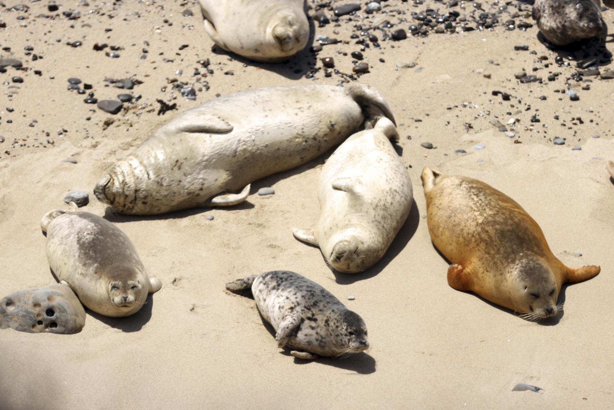
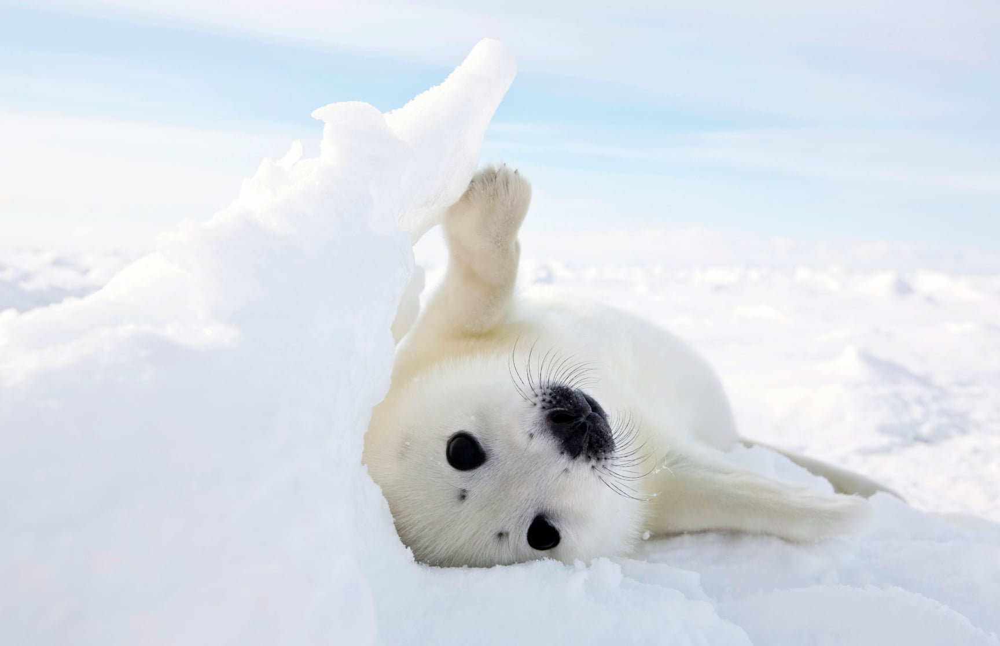
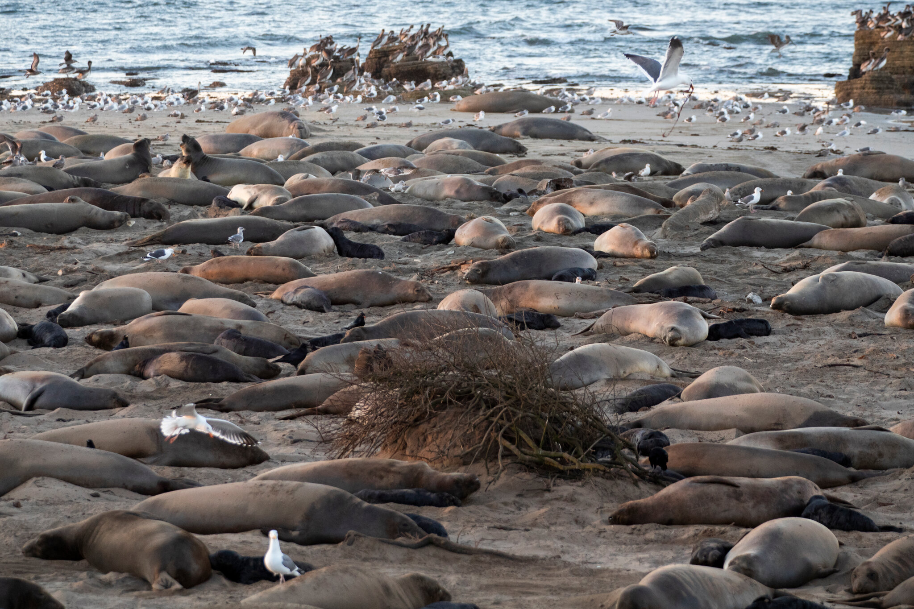
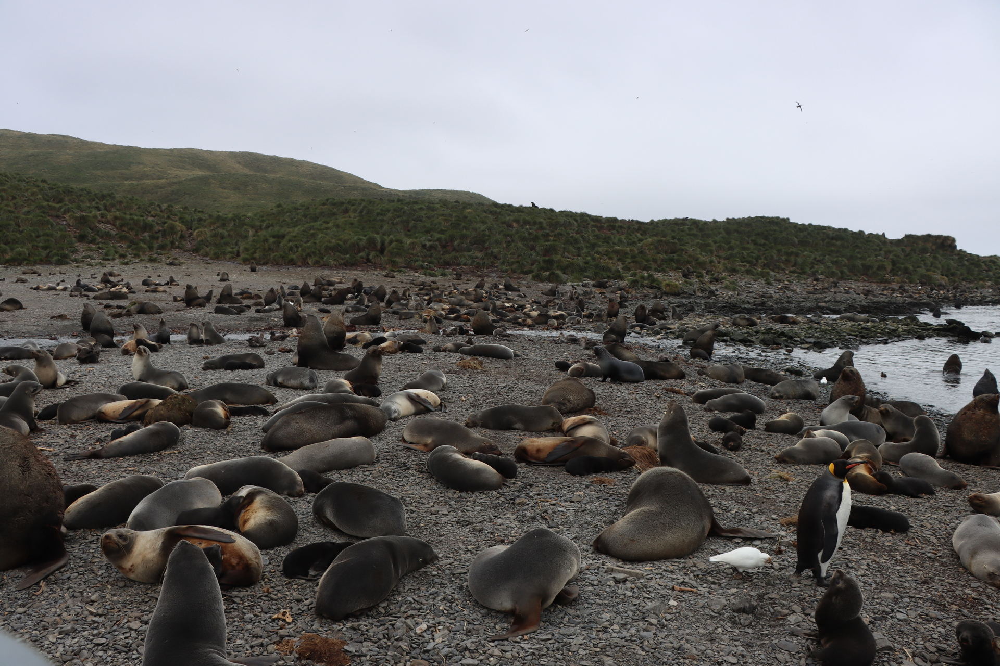
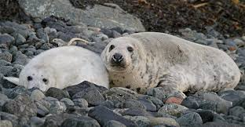

Seals Are Everywhere!
One of the most interesting things about seals is that you can find them on every single continent on Earth including Antarctica. They are incredibly adaptable animals that have learned how to survive in very different environments.
Seals live in cold places like the Arctic and Antarctica but also in warmer places like Hawaii and the Mediterranean Sea. One species even lives in a freshwater lake in Russia which is really surprising!
Each habitat has different challenges so seals have developed special adaptations to survive wherever they live.
Habitat Fast Facts
- Coldest habitat: Antarctic waters which can be -2 degrees Celsius
- Warmest habitat: Hawaiian monk seals live in tropical Pacific waters
- Most isolated: Baikal seals live 1,500 km from the nearest ocean
- Deepest diving: Weddell seals dive 600m under Antarctic ice
The Arctic

A baby harp seal on Arctic ice
The Arctic is one of the most important places for seals in the whole world. Tons of seals live up here including harp seals, ringed seals, bearded seals, and walruses.
Ringed seals are really cool because they actually live underneath the ice in winter. They scratch breathing holes in the ice with their claws so they can breathe. These holes are called aglu which is an Inuit word.
Unfortunately climate change is melting the Arctic ice and this is a big problem for seals because they need the ice to have their babies on. If the ice melts too early the baby seals can fall into the cold water before they are ready.
Seals that live in the Arctic:
- Harp Seal
- Ringed Seal
- Bearded Seal
- Ribbon Seal
- Walrus
Antarctica
Antarctica is also a very important place for seals. There are actually 4 species of seals that only live in Antarctica and nowhere else in the world! These are:
- Crabeater Seal
- Leopard Seal
- Ross Seal
- Weddell Seal

A leopard seal in Antarctic waters
The Crabeater Seal is really interesting because even though its name says crab it actually doesnt eat crabs! It eats krill which are tiny shrimp-like animals. The Crabeater Seal might actually be the most abundant large mammal on Earth besides humans. Scientists think there are between 15 and 40 million of them!
The Weddell Seal lives further south than any other mammal that stays in one place all year. They live right on the ice attached to Antarctica and stay there even during the harsh winter. Weddell seals can dive to 600 meters and hold their breath for over 80 minutes which is the most impressive diving ability of any seal.
The Leopard Seal is the top predator in Antarctica. Unlike most seals it actually hunts and eats other seals and penguins. It has a very large mouth with sharp teeth.
Temperate Coastlines
Temperate coastlines are areas that are not super hot or super cold. These areas are very important for sea lions and fur seals. Some really good examples of temperate seal habitats include:

California Coast
Home to huge colonies of elephant seals, California sea lions, and harbor seals. Ano Nuevo State Park is a great place to see them!

South Georgia Island
Millions of Antarctic fur seals and elephant seals come here every year to breed. It is one of the best places to see wildlife in the whole world!

European Coasts
The UK has about 40% of all the grey seals in the world! You can also find harbor seals along Irish and Scandinavian coasts.
Tropical Habitats

A Hawaiian Monk Seal resting on the beach
Most people dont realize that some seals actually live in tropical areas where the weather is warm! There are two types of monk seals that live in tropical habitats: the Hawaiian Monk Seal and the Mediterranean Monk Seal.
The Hawaiian Monk Seal lives in the waters around the Hawaiian islands. Sadly there are fewer than 1,500 of them left which means they are critically endangered. They are the only seal species that is native to Hawaii.
The Mediterranean Monk Seal is even rarer. There are fewer than 800 left in the entire world making it the most endangered pinniped on Earth. A third monk seal species called the Caribbean Monk Seal went completely extinct in 2008 which is very sad.
Freshwater Habitats - The Baikal Seal!
The Most Unique Seal Habitat
The Baikal Seal is the ONLY seal in the world that lives entirely in fresh water. It lives in Lake Baikal in Russia which is the deepest lake in the world at 1,642 meters deep. Scientists think the seal got there millions of years ago when there used to be a river connecting the lake to the Arctic Ocean.
| Lake Baikal Facts | |
|---|---|
| Age of the lake | About 25 million years old |
| Maximum depth | 1,642 meters (deepest lake on Earth) |
| Location | Southern Siberia, Russia |
| Seal population | 60,000 to 80,000 seals |
| Distance from nearest ocean | Over 1,500 km away |